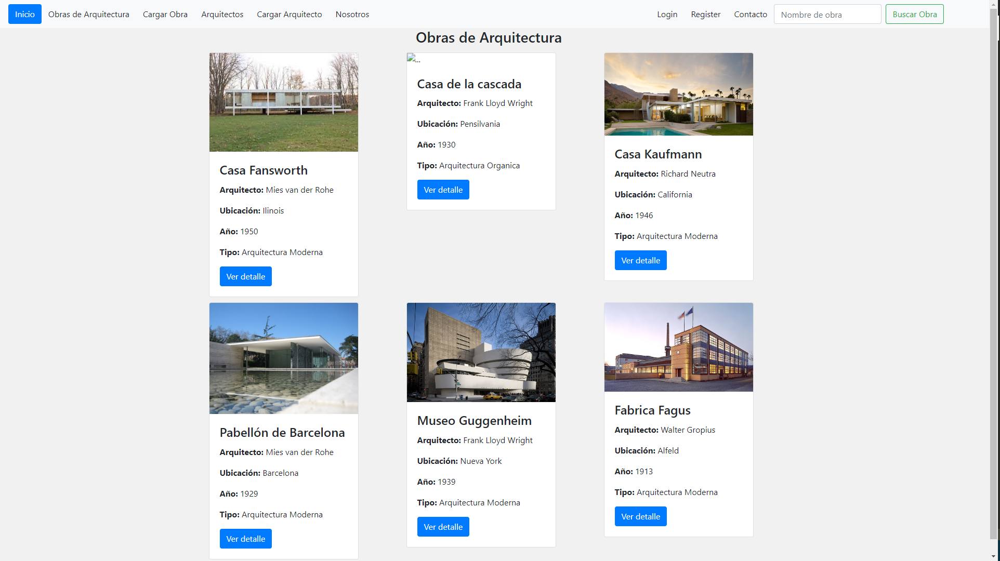
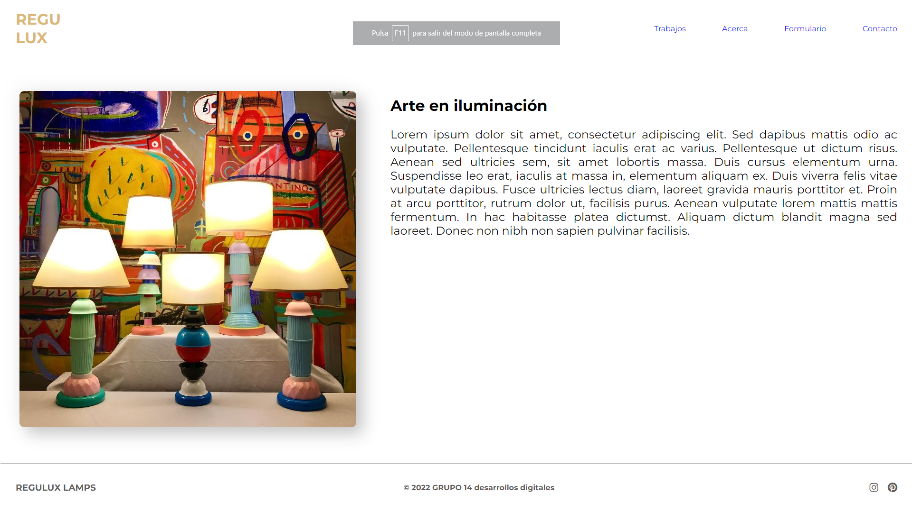

Educación
ARQUITECTO
Facultad Arquitectura, Diseño y Urbanismo (UBA) (2012-2022)
Arquitecto interesado en como las personas hacen uso de los espacios en las diferentes escalas, así mismo me llama la atención la arquitectura aplicada a nuevas tecnologías. Estoy convencido en la utilización de ambas para mejorar la calidad de vida. Estoy en proceso de formación para establecer herramientas de implementación BIM y automatización de procesos mediante programación en Python.
Pagina realizada con Python + Django y base de datos como MySQL. Se utilizaron metodos POST, como elementos de bootstrap para el nav y galeria. Los elementos se podriar modificar, eliminar, y crear mediante el administrador.
Pagina realizada con HTML + CSS sumado a elementos dinamicos con JavaScript y contacto con base de datos mediante Python. La pagina fue realizada para una persona que se dedica a vender lamparas artisticas.
